1. Carga atual x IBS/CBS (26%)
Comparação consolidada de PIS + COFINS + ISS versus cenário indicativo de IBS/CBS (26%) sobre VL_ITEM.
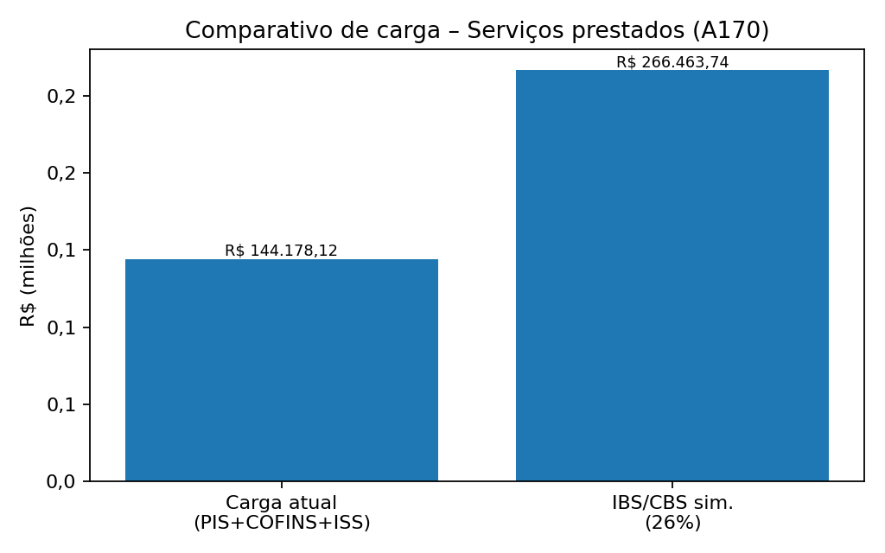
Leitura executiva
A alíquota efetiva média atual (PIS+COFINS+ISS) é de 14,1%. O cenário uniforme de 26% indica Δ de R$ 122.285,62.
Use este comparativo como mapa de exposição para priorizar revisão de praça, contratos e parametrização – não como cálculo legal definitivo.
2. Mix de serviços (COD_ITEM) – materialidade e exposição
Distribuição do volume por tipo de serviço e comparativo Atual x IBS/CBS (26%).
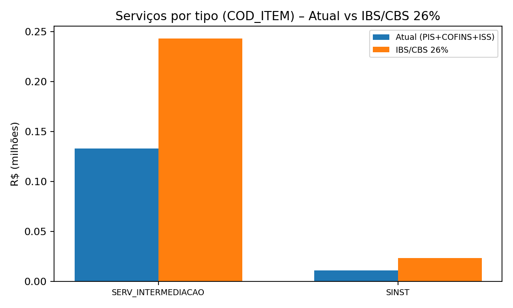
Prioridades
Faça auditoria documental e fiscal primeiro nos tipos de serviço mais materiais (cadastro, NFS-e, local de incidência e retenções).
Tabela de apoio:
| COD_ITEM | Valor (VL_ITEM) | Carga atual | IBS/CBS 26% | Δ 26% |
|---|---|---|---|---|
| SERV_INTERMEDIACAO | R$ 934.657,55 | R$ 133.063,06 | R$ 243.010,96 | R$ 109.947,90 |
| SINST | R$ 90.202,99 | R$ 11.115,06 | R$ 23.452,78 | R$ 12.337,72 |
3. Localidade – UF (Top 10 por valor)
Concentração do valor de serviços por UF (campo UF do documento de serviço na base).
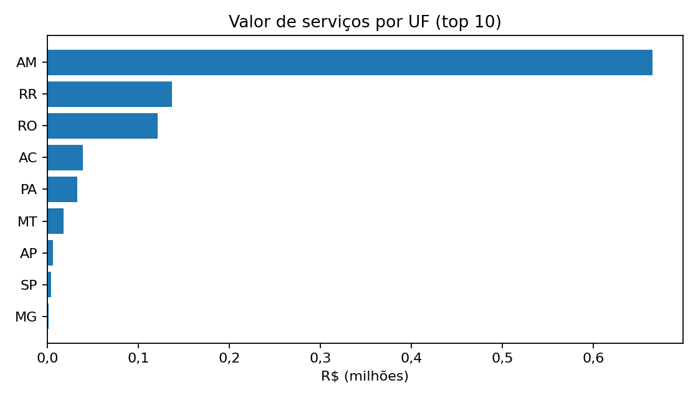
Implicações
Como ISS é municipal, a UF é apenas um “primeiro corte”; o município (abaixo) define grande parte do risco. Priorize UFs mais materiais e valide se o município indicado é o correto para o tipo de serviço.
Top UFs (VL_ITEM):
| UF | Valor (VL_ITEM) | % |
|---|---|---|
| AM | R$ 665.013,67 | 64,9% |
| RR | R$ 136.911,13 | 13,4% |
| RO | R$ 121.000,39 | 11,8% |
| AC | R$ 39.171,36 | 3,8% |
| PA | R$ 32.979,74 | 3,2% |
4. Evolução mensal – volume x carga
Tendência mensal do valor de serviços (VL_ITEM) e da carga atual (PIS+COFINS+ISS).
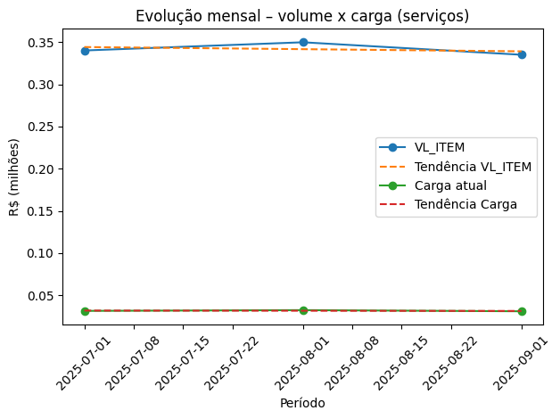
Como usar
Cruce os meses de pico com o heatmap UF x mês para identificar praças críticas e direcionar conciliação NFS-e x EFD.
5. Pareto de municípios – onde concentrar validação do ISS
Concentração do valor (VL_ITEM) por município para priorizar auditoria do local de incidência e cadastros do tomador.
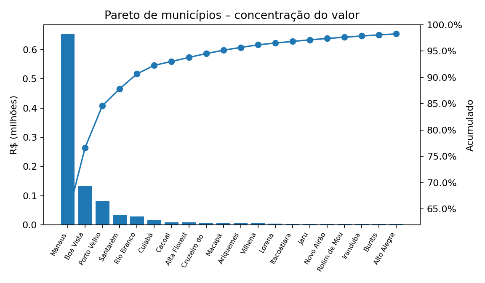
Hotspots (Top municípios)
| UF | Município | Valor | % |
|---|---|---|---|
| AM | Manaus | R$ 652.880,39 | 63,7% |
| RR | Boa Vista | R$ 132.671,91 | 12,9% |
| RO | Porto Velho | R$ 81.756,79 | 8,0% |
| PA | Santarém | R$ 32.979,74 | 3,2% |
| AC | Rio Branco | R$ 28.981,94 | 2,8% |
| MT | Cuiabá | R$ 16.584,86 | 1,6% |
| RO | Cacoal | R$ 7.693,79 | 0,8% |
| RO | Alta Floresta D'Oeste | R$ 7.673,77 | 0,7% |
6. Heatmap – UF x mês (valor)
Matriz de valor de serviços por UF ao longo do período (R$ mi).
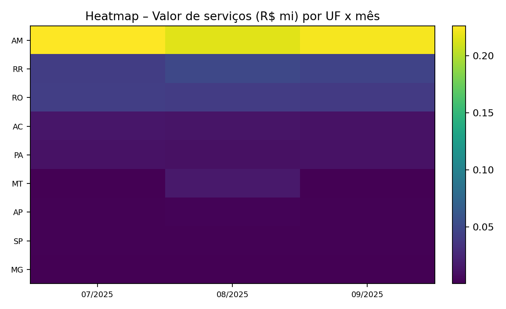
Decisão prática
As células mais intensas indicam onde o volume se concentra por praça e mês – use como roteiro de conciliação e amostragem.
7. Heatmap – UF x tipo de serviço
Materialidade por combinação de UF e COD_ITEM.
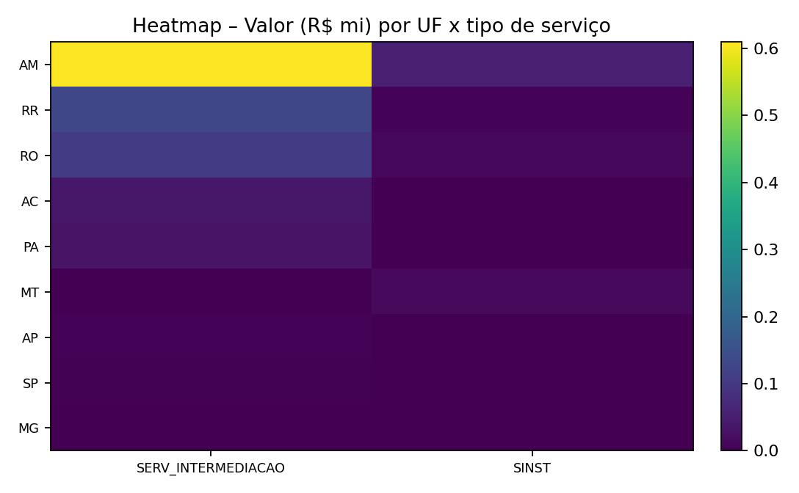
O que olhar
Se o mix muda por UF, tende a mudar também o “manual de ISS” (exigências municipais e local de incidência). Trate como mapa de governança.
8. Histograma – alíquota efetiva atual
Distribuição por item: (PIS + COFINS + ISS) / VL_ITEM.
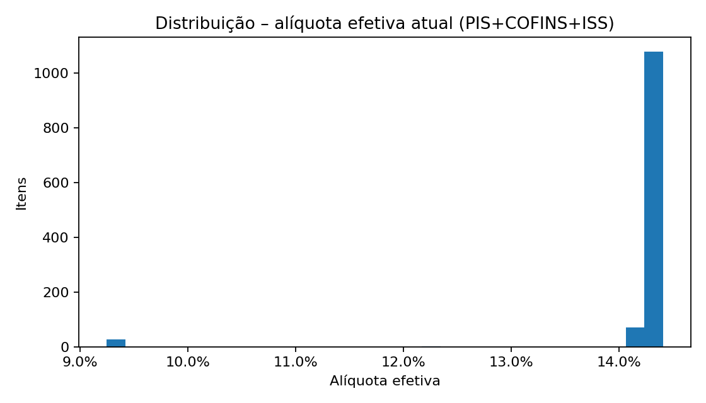
O que está dizendo
Percentis (itens): P25 14,2% · Mediana 14,2% · P75 14,3% · P90 14,3% · P95 14,3%.
Distribuição estreita sugere padrão tributário uniforme; priorize outliers (retenções, base, município e alíquota de ISS).
9. Δ (IBS/CBS 26% – carga atual) por UF
Comparativo indicativo por praça (UF) para priorização de exposição.
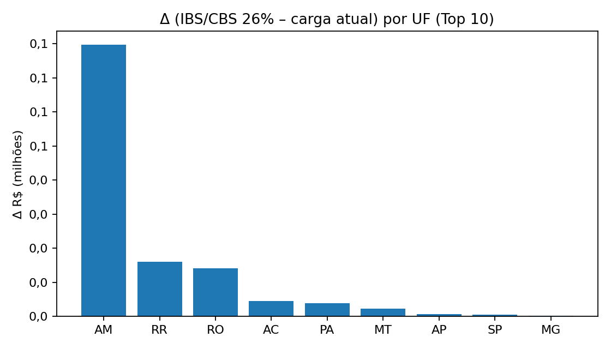
Como usar
UFs com maior Δ e alta materialidade devem ser tratadas como frentes prioritárias (pricing, contratos, evidências e cadastros por município).
10. Mapa de risco – municípios (materialidade x Δ%)
Prioriza onde o volume é grande e a pressão relativa (comparativo) é maior.
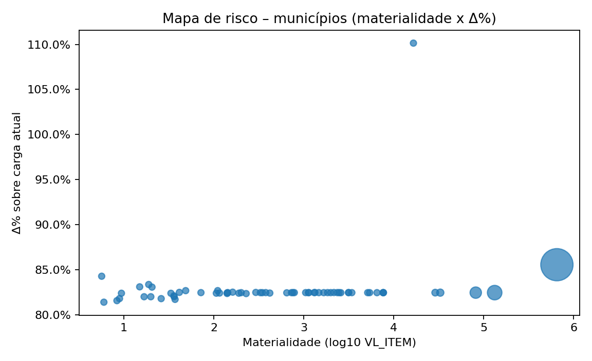
Prioridade por praça
Municípios no quadrante “alto volume / alta pressão” são candidatos a auditoria do ISS (local de incidência) e conciliação NFS-e x EFD.
11. B2B x B2C (proxy por CNPJ/CPF)
Segmentação simples para leitura comercial e de risco cadastral do tomador.
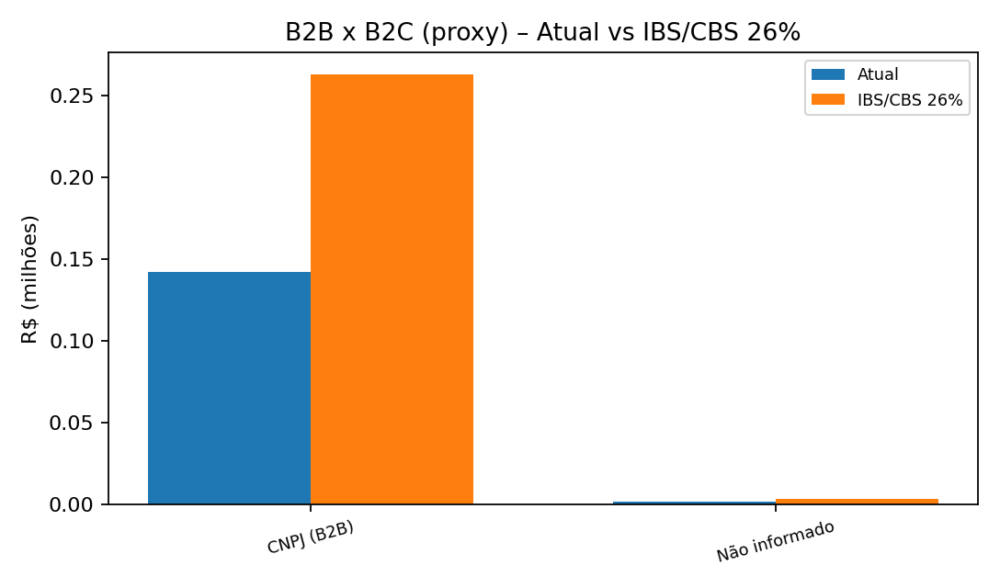
Interpretação
Itens com tomador sem documento (“Não informado”) aumentam risco de retenções, divergências e dificultam comprovação de localidade.
12. Qualidade cadastral e consistência fiscal
Indicadores para reduzir risco de autuação (ISS/PIS/COFINS) e divergências em obrigações acessórias.
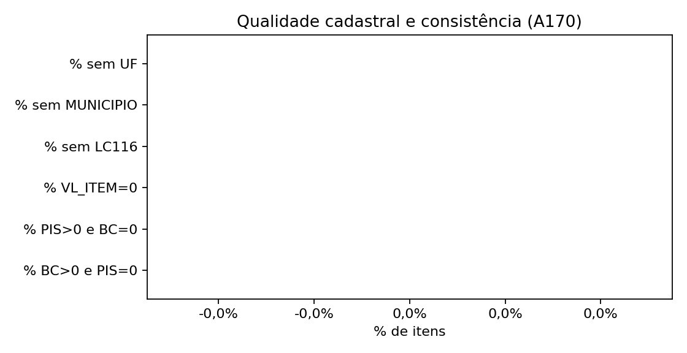
Checklist rápido
- % sem UF: 0,0%
- % sem MUNICIPIO: 0,0%
- % COD LC 116 ausente/0: 100,0%
- % VL_ITEM=0: 0,0%
- % PIS>0 e BC=0: 0,0%
- % BC>0 e PIS=0: 0,0%
13. Regime do destinatário (proxy)
Distribuição do volume por regime do tomador (proxy por raiz de CNPJ) para orientar política comercial e risco.
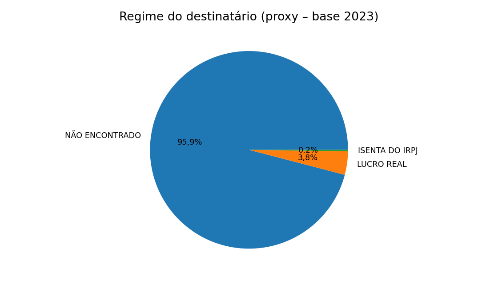
Observação
Proxy baseado em base de regimes (ano 2023). A base é fortemente concentrada em Lucro Real (80%).
Checklist de adequação – foco em local de incidência e evidências
Ações práticas para endereçar riscos de ISS e coerência da escrituração.
Trilha recomendada
- Local do ISS (município correto): validar regra aplicável por tipo de serviço e evidência de execução (DT_EXE_SERV) para Top municípios.
- Conciliação NFS-e x EFD: amostragem por hotspots do heatmap (UF x mês) com verificação de tomador, valores e ISS.
- Enriquecer COD LC 116: atribuir o item correto da LC 116/2003 (evitar “0”), criando governança de cadastro por contrato.
- Retenções (PIS/COFINS): revisar consistência de VL_PIS_RET/VL_COFINS_RET e condições contratuais por tomador.
- Matriz por praça: manter matriz de alíquota ISS e exigências municipais (NFS-e, cadastro, particularidades) para AM/RR/RO.
Premissas e metodologia
Critérios e simplificações adotados para cálculo e visualizações.
- Base: aba A170 do arquivo cruzado informado.
- Foco: IND_OPER=1 (serviços prestados) – toda a base analisada está nesse recorte.
- Volume: somatório de VL_ITEM.
- Carga atual: VL_PIS.1 + VL_COFINS.1 + VL_ISS.
- Localidade: campos UF e MUNICIPIO do documento de serviço (referência operacional na base).
- Stress test IBS/CBS 26%: alíquota uniforme sobre VL_ITEM para priorização (não é cálculo legal definitivo).
- Regime do tomador (proxy): por raiz de CNPJ com base de regimes (ano 2023).